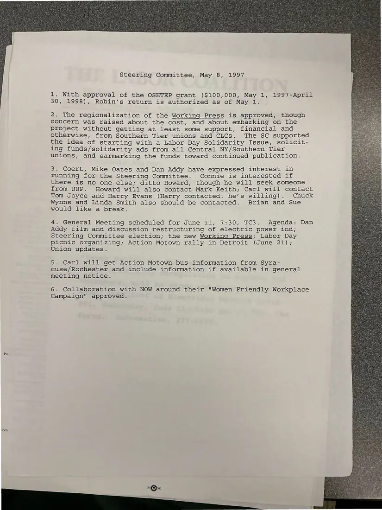

Minutes, 1 page
Steering Committee minutes, May 8, 1997
May 8, 1997
With the OSHTEP health and safety grant approved, a staff member's return is authorized. The committee approves regionalizing The Working Press, starting with a Labor Day solidarity issue, and discusses candidates, the agenda for the June general meeting, Action Motown, and a collaboration with NOW on its “Women Friendly Workplace” campaign.
Download or cite this itemPages


(open zoom view)Read the page text (machine-read, mostly readable)
This text was generated automatically from the photograph and has not been corrected. The image is the authoritative record.
Steering Committee, May 8, 1997 1. With approval of the OSHTEP grant ($100,000, May 1, 1997-April 30, 1998), Robin’s return is authorized as of May 1. 2. The regionalization of the Working Press is approved, though concern was raised about the cost, and about embarking on the project without getting at least some support, financial and otherwise, from Southern Tier unions and CLCs. The SC supported the idea of starting with a Labor Day Solidarity Issue, solicit- ing funds/solidarity ads from all Central NY/Southern Tier unions, and earmarking the funds toward continued publication. 3. Coert, Mike Oates and Dan Addy have expressed interest in running for the Steering Committee. Connie is interested if there is no one else; ditto Howard, though he will seek someone from UUP. Howard will also contact Mark Keith; Carl will contact Tom Joyce and Harry Evans (Harry contacted: he’s willing). Chuck Wynns and Linda Smith also should be contacted. Brian and Sue would like a break. 4. General Meeting scheduled for June 11, 7:30, TC3. Agenda: Dan Addy film and discussion restructuring of electric power ind; Steering Committee election; the new Working Press; Labor Day picnic organizing; Action Motown rally in Detroit (June 21); Union updates. 5. Carl will get Action Motown bus information from Syra- cuse/Rochester and include information if available in general meeting notice. 6. Collaboration with NOW around their "Women Friendly Workplace Campaign" approved.
See something wrong, or recognize a person or event? Send a correction. If you hold rights in this item or think it should not be public, write to the same address.